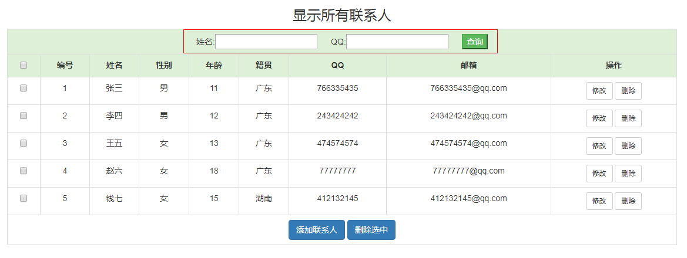

删除选中&条件查询&分页查询
案例1：删除所选联系人
1.1 案例需求
在展示页面上为每一个联系人添加一个复选框,在页面上添加一个”删除选中”按钮
然后勾选需要删除的人员,点击按钮,删除选中人员
1.2 案例效果
1.3 案例分析
在service中要用到事务,在此我们使用jdbcTemplate提供的一组api,这组api大家知道他们的作用即可.不用记住.
1.4 案例实现
1.4.1 实现表头中复选框的全选和全不选效果和表单提交功能
注意 : 做案例之前先复制一份list.jsp,命名为page_list.jsp,为分页案例页面.
在表头添加一列,添加复选框添加点击事件
编号 姓名 性别 年龄 籍贯 QQ 邮箱 操作
在所有行外面添加一个表单,给每行添加一个复选框,在最后一行添加删除选中按钮
<%--添加一个表单,用来提交选中的联系人的id--%>添加联系人 <%--javascript:void(0)的作用是a标签href属性的跳转--%> 删除选中
编写事件:
<script> function checkAll(){ //获取最上面的复选框标签元素(表头的复选框) var ckbox=document.getElementById("ckbox"); //获取下面所有的复选框标签元素 var cids=document.getElementsByName("cid"); //遍历获取每个复选框,让其选中状态和表头的复选框状态保持一致 for(var i=0;i<cids.length;i++){ cids[i].checked=ckbox.checked; } } function deleteChecked(){ //获取表单,提交表单 document.getElementById("formId").submit(); } </script>
1.4.2 编写servlet
//urlPatterns = "/deleteChecked"
public class DeleteCheckedServlet extends HttpServlet {
protected void doPost(HttpServletRequest request, HttpServletResponse response) throws ServletException, IOException {
try {
// 1.获取要删除的联系人id
String[] cids = request.getParameterValues("cid");
// 2.调用service完成删除操作
ContactService contactService = new ContactService();
contactService.deleteChecked(cids);
// 3.成功之后重定向到查询所有的servlet上
response.sendRedirect(request.getContextPath() + "/queryAll");
} catch (Exception e) {
e.printStackTrace();
throw new RuntimeException();
}
}
protected void doGet(HttpServletRequest request, HttpServletResponse response) throws ServletException, IOException {
doPost(request,response);
}
}1.4.3 编写service
public void deleteChecked(String[] cids) throws Exception {
// 1.获取连接,开启事务
//获取数据源
DataSource dataSource = JDBCUtils.getDataSource();
//实例jdbcTemplate
JdbcTemplate jdbcTemplate = new JdbcTemplate(dataSource);
//启动事务管理器（获取datasource操作数据库连接对象并绑定到当前线程中）
TransactionSynchronizationManager.initSynchronization();
//从数据源中获取jdbcTemplate操作的当前连接对象
Connection connection = DataSourceUtils.getConnection(dataSource);
try {
//设置连接不自动提交事务
connection.setAutoCommit(false);
// 2.遍历ids,调用dao完成这个删除操作
ContactDao contactDao = new ContactDao();
for (String cid : cids) {
contactDao.deleteChecked(jdbcTemplate,cid);
}
// 3.若成功,提交事务
connection.commit();
} catch (Exception e) {
e.printStackTrace();
// 3.若失败,回滚事务,且通知servlet
try {
connection.rollback();
} catch (SQLException e1) {
e1.printStackTrace();
}
//将异常抛给servlet 通知servlet回滚了
throw e;
}finally {
try {
//释放当前线程与连接对象的绑定
TransactionSynchronizationManager.clearSynchronization();
//重置当前连接为自动提交事务
connection.setAutoCommit(true);
} catch (SQLException e) {
e.printStackTrace();
}
}
}注意: JdbcTemplate提供的这组事务管理的api大家只需要知道他们的作用即可,我们以后在学习spring框架的时候用更好的方式替代.
1.4.4 编写dao
public void deleteChecked(JdbcTemplate jdbcTemplate, String cid) throws Exception{
jdbcTemplate.update("delete from contact where id = ?",cid);
}案例2：条件查询
分析SQL过程
SELECT FROM contact
SELECT FROM contact WHERE NAME LIKE ‘%三%’
SELECT FROM contact WHERE qq LIKE ‘%7%’
SELECT FROM contact WHERE NAME LIKE ‘%三%’ AND qq LIKE ‘%7%’
String sql=”SELECT * FROM contact where 1=1”;
//定义集合,保存参数
List
if(客户端向服务端传递过来name){
sql=sql+” and name like ? “;
list.add(“%”+name+”%”);
}
if(客户端向服务端传递过来qq){
sql=sql+” and qq like ? “;
list.add(“%”+qq+”%”);
}
list转换数组
templdate.query(sql,new XXX(),list转换数组);
2.1 案例需求
在页面上添加两个文本框,人员名称和人员QQ,再添加一个查询按钮,
点击搜索,去数据库中查询满足条件的人员信息,然后将查询的数据显示在展示页面上
2.2 案例效果

2.3 案例分析
2.4 案例实现
2.4.1 修改list.jsp,添加查询表单
在table中添加一行,放入一个表单,添加一个文本框(名称和QQ)和一个查询按钮
<%-- 下面的代码不在粘贴 --%>
2.4.2 编写Servlet代码
//urlPatterns = "/queryByConditions"
public class QueryByConditionsServlet extends HttpServlet {
protected void doPost(HttpServletRequest request, HttpServletResponse response) throws ServletException, IOException {
//0.处理中文乱码
request.setCharacterEncoding("utf-8");
//1.获取名称和QQ
String name = request.getParameter("name");
String qq = request.getParameter("qq");
//2.调用service完成条件查询操作,返回值为满足条件的联系人list
ContactService contactService = new ContactService();
List<Contact> list = contactService.queryByConditions(name,qq);
//3.将list放入request域中,转发到list.jsp
request.setAttribute("list",list);
// 将name和qq放入request域中,用来回显参数
request.setAttribute("name",name);
request.setAttribute("qq",qq);
request.getRequestDispatcher("/list.jsp").forward(request,response);
}
protected void doGet(HttpServletRequest request, HttpServletResponse response) throws ServletException, IOException {
doPost(request,response);
}
}
2.4.3 编写service
public List<Contact> queryByConditions(String name, String qq) {
ContactDao contactDao = new ContactDao();
List<Contact> list = contactDao.queryByConditions(name,qq);
return list;
}
2.4.4 编写dao
public List<Contact> queryByConditions(String name, String qq) {
//1.基础sql:
//也可以使用StringBuilder
String sql = "select * from contact where 1=1";
// 2.判断条件是否为空 若不为空拼接sql 添加参数
// 创建一个list用来存放参数
List<String> params = new ArrayList();
// 判断用户人员
if(name != null && name.trim().length()>0){
sql += " and name like ?";
params.add("%"+name+"%");
}
// 判断用户QQ
if(qq != null && qq.trim().length()>0){
sql += " and qq like ?";
params.add("%"+qq+"%");
}
// 3.执行sql查询,返回list
List<Contact> list = jdbcTemplate.query(sql,new BeanPropertyRowMapper<>(Contact.class),params.toArray());
return list;
}
2.4.5 查询效果,参数回显
需要在servlet中把参数name和qq放入request域中,然后在list.jsp上获取参数值(数据回显)
案例3：分页查询
3.1 案例需求
若联系人比较多的时候,在首页上显示的数据特别多,导致页面特别长.
为了给用户更好的体验我们需要进行分页显示联系人信息.
3.2 案例效果
3.2 相关知识
3.2.1 mysql中的分页
mysql中通过limit关键字实现分页
格式：
select * from 表 limit ?,?;
参数1：开始索引 startIndex ，默认值：0。必须是正数。
参数2：每页显示的条数 pageSize
例如：
select * from products limit 0,5; #第1页，每页显示5条。
select * from products limit 5,5; #第2页，每页显示5条。
select * from products limit 10,5; #第3页，每页显示5条。
select * from products limit (n-1)*5,5; #第n页，每页显示5条。
规律 :
开始索引 = (页码 - 1) * 每页显示的条数;
3.2.1 PageBean的编写
做一个简单的分页展示 , 最终页面上需要有:
- 当前页数据
- 当前页
- 总页数
- 每页显示的条数
- 总记录数
为了方便各层之间传递数据以及方便把数据转发给jsp页面,我们一般会将这5个参数封装成一个对象(PageBean)
package cn.itcast.utils;
import java.util.List;
/**
* 分页bean
* @param <T>
*/
public class PageBean<T> {
private List<T> data; //当前页数据列表,需要通过limit查询
private int curPage; //当前页,已知数据,从页面上传递过来
private int totalPage; //总页数,通过总记录数和每页显示的条数计算出来
private int count; //总记录数,需要通过count(*)查询
private int pageSize; //每页显示多少条数据,已知数据
/**
* curPage和pageSize是已知的数据,通过一个带参构造器方便创建pageBean对象
* @param curPage 当前页
* @param pageSize 每页显示多少条数据
*/
public PageBean(int curPage, int pageSize) {
this.curPage = curPage;
this.pageSize = pageSize;
}
/**
* 获取limit中开始的索引
* @return 分页开始索引
*/
public int getStartIndex(){
return (this.curPage - 1) * this.pageSize;
}
/**
* 获取总页数
* 通过总记录数和每页显示的条数相除计算出来,
* 若两者可以整除,总页数就是商
* 若两者不可以整除,总页数就是商+1
* @return 总页数
*/
public int getTotalPage() {
return (int) Math.ceil(count*1.0/pageSize);
}
//getter和setter方法不再粘贴
//...
}
3.3 案例分析
3.4 案例实现
3.4.1 访问链接
http://localhost:9090/day05/queryByPage?curPage=1
3.4.2 编写Servlet代码
//urlPatterns = "/queryByPage"
public class QueryByPageServlet extends HttpServlet {
protected void doPost(HttpServletRequest request, HttpServletResponse response) throws ServletException, IOException {
//1.获取curPage,设置pageSize
int curPage = Integer.parseInt(request.getParameter("curPage"));
int pageSize = 3;
//2.调用service完成分页查询,参数为curPage和pageSize,返回值为PageBean对象
ContactService contactService = new ContactService();
PageBean<Contact> pageBean = contactService.queryByPage(curPage,pageSize);
//3.将pageBean放入request域中,转发到page_list.jsp
request.setAttribute("pb",pageBean);
request.getRequestDispatcher("/page_list.jsp").forward(request,response);
}
protected void doGet(HttpServletRequest request, HttpServletResponse response) throws ServletException, IOException {
doPost(request,response);
}
}
3.4.3 编写service
public PageBean<Contact> queryByPage(int curPage, int pageSize) {
//1.创建pageBean对象
PageBean<Contact> pageBean = new PageBean<>(curPage,pageSize);
//2.调用dao,查询当前页数据,设置给pageBean
ContactDao contactDao = new ContactDao();
List<Contact> data = contactDao.queryByPage(pageBean);
pageBean.setData(data);
//3.调用dao,查询总记录数,设置给pageBean
int count = contactDao.getCount();
pageBean.setCount(count);
//4.返回pageBean
return pageBean;
}
3.4.4 编写dao
//查询总记录数
public int getCount() {
String sql = "select count(*) from contact";
int count = jdbcTemplate.queryForObject(sql,int.class);
return count;
}
// 分页查询
public List<Contact> queryByPage(PageBean pageBean) {
String sql = "select * from contact limit ?,?";
List<Contact> list = jdbcTemplate.query(sql,new BeanPropertyRowMapper<>(Contact.class),pageBean.getStartIndex(),pageBean.getPageSize());
return list;
}
3.4.5 修改page_list.jsp页面
在做删除案例之前复制的list.jsp,重命名为page_list.jsp
导入分页组件
//复制bootstrap的分页组件,粘贴到table的结束标签的下面
完善分页组件
步骤如下:
- 通过\<c:forEach>先展示所有页码,遍历的时候判断是否是当前页
- 若是当前页,不加超链接
- 若不是当前页,添加超链接
- 完成上一页功能,通过\<c:if>判断是否是首页
- 若是首页,不加超链接
- 若不是首页,添加超链接,跳转到当前页-1
- 完成下一页功能,通过\<c:if>判断是否是尾页
- 若是尾页,不加超链接
- 若不是尾页,添加超链接,跳转到当前页+1
代码如下:
上一篇
 filter_listener
过滤器/监听器的应用场景。
2019-04-09
下一篇
filter_listener
过滤器/监听器的应用场景。
2019-04-09
下一篇
 http中jsp&el&jstl
jsp的基本语法，el表达式，jstl标签。
2019-03-27
http中jsp&el&jstl
jsp的基本语法，el表达式，jstl标签。
2019-03-27